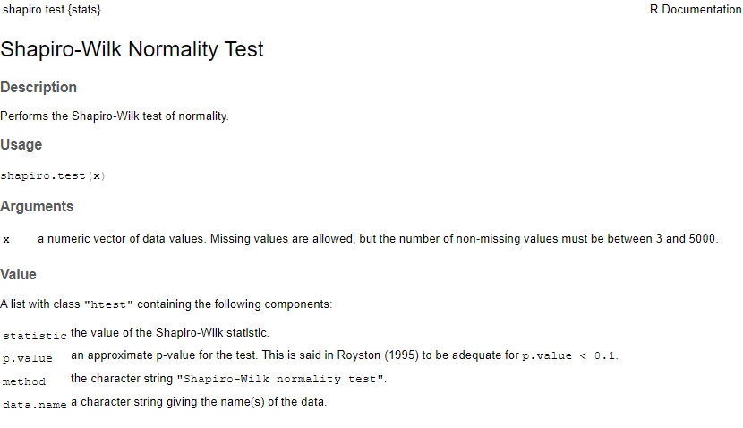

Every hypothesis test comes with a null hypothesis.
In a hypothesis test, the p-value is the probability that the pattern in the data could arise in a situation where the null hypothesis is true
Reviewing null hypotheses
Depending on the test, the null hypothesis may be framed in terms that can sound like they have positive or negative connotations
For the Shapiro-Wilk Normality test, the null hypothesis is the data are drawn from a population that is normally distributed
Therefore, when p<0.05, this means the the data are unlikely to have been drawn from a normal distribution
Reviewing null hypotheses
Depending on the test, the null hypothesis may be framed in terms that can sound like they have positive or negative connotations
For the Spearman’s rank correlation test, the null hypothesis is that there is no monotonic relationship between the variables
Therefore, when p<0.05, this means the pattern in the data are inconsistent with having no relationship (e.g., having arisen from chanceReviewing null hypotheses
When using a test, it’s important to be aware of the null hypothesis. However, R help can be variably unhelpful in distinguishing.
Reviewing null hypotheses

Reporting the results of a statistical test
When reporting the results of a statistical test, be sure to include the following information at a minimum within the context of the hypothesis:
Name of test and variable(s)
Test statistic(s) (letter will vary)
Degrees of freedom (df)
P-value (p)
Reporting the results of a statistical test
library(palmerpenguins) #create a dataset of just Adelie and Gentoo penguins, and just the species and body mass columns ggenChin <- penguins %>%filter(species =="Chinstrap"| species=="Gentoo") %>%select(species, body_mass_g) %>%drop_na() t.test(data = genChin, body_mass_g ~ species)
Welch Two Sample t-test
data: body_mass_g by species
t = -20.628, df = 170.4, p-value < 2.2e-16
alternative hypothesis: true difference in means between group Chinstrap and group Gentoo is not equal to 0
95 percent confidence interval:
-1471.440 -1214.416
sample estimates:
mean in group Chinstrap mean in group Gentoo
3733.088 5076.016
Reporting the results of a statistical test
“I used Welch’s two-sample t-test of the body masses for Gentoo and Chinstrap penguins, and rejected the null hypothesis that there is no difference in mean body mass between these two groups (t=-20.62, df=170.4, p<2.2e-16).”
Linear modeling
Unlike hypothesis tests, we are often making judgement calls about how well a model fits the data
Testing assumptions
Linearity: The relationship between X and the mean of Y is linear.